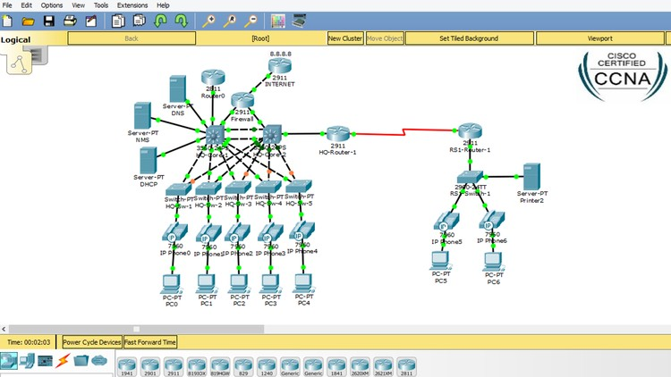

Configura Redes
Escrito el: 19/11/2021 por:Admin
Aprende a configurar redes de datos a traves de la plataforma de cisco packet tracer.
Las diferencias que se observan entre estos dos protocolos es evidentemente la extensión de la direcciones que identifican a los nodos dentro de una red. Dentro de las normas del protocolo TCP/IP
IngresarCon una alta gama de profesores especializados en el area ayudan a nuestros alumnos a desembolverse en una carrera del futuro y ser excelentes profecionistas para desmostrar el aprendizaje en el ambito laboral.
IngresarCon nuestra app puedes crear subredes IPv6 y IPv4 de forma rapida pero no olvides que tienes que comprender los terminos de direccionamiento, para saber como funcionan en los dispositivos de red.
IngresarEscrito el: 19/11/2021 por:Admin
Aprende a configurar redes de datos a traves de la plataforma de cisco packet tracer.
Es importante saber direccionar nuestros equipos de red, con el protocolo del futuro IPv6, es mejor estar preparados para los cambios.
- Victor De La Cruz